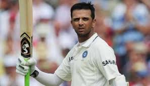

Information about various sports that I play and follow.
Being a '90s born Indian, one could deduce that cricket must have been a big part of my childhood. However, I was a teen when the 2006 world cup was being played, and that was my first tryst with football. Since that tournament, with its infamous headbutt, football has developed a close relation with me. I will attach some images of footballers & cricketers that I admire.
Pictures:
Sergio Busquets

Rahul Dravid

Lionel Messi